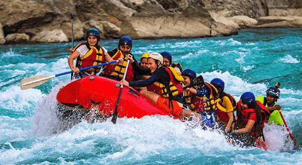

The first of the medium routes
This picture comes from one of our medium difficulty routes one group of customers wanted. They enjoyed the increased difficulty offered on this trip and have recommended it to others that enjoy rafting.
This page contains a lot about the trips we offer but you can do more than what is seen here, we have custom trips that you can set up yourself. Contact us to learn more about making your own custom adventure.
Contact Us
This picture comes from one of our medium difficulty routes one group of customers wanted. They enjoyed the increased difficulty offered on this trip and have recommended it to others that enjoy rafting.

This image comes from one of the easy routes on our list. The customers here were new to rafting and enjoyed the more peaceful time that this route offers.

This image captured by one of our employees comes from a trip taken on the more difficult of routes offered below. These people have great experience with rafting and wanted a challenge, we were proud to have been able to help them enjoy their time out on the river.
| Trip | Difficulty | Description | Duration |
|---|---|---|---|
| The First Medium route | Medium | This route is the first medium difficulty route we have to offer. It is longer than most of the easier routes and has more rapids than them, but it is still enjoyable for those looking to improve their skill. | 4 hours |
| The Easy route | Easy | This route is one of the first routes we created for our company. It provides a calm and manageable adventure for those looking to have a simple, fun experience that requires little knowledge to enjoy. | 1.5 hours |
| The Challenge route | Difficult | This is the most difficult route we have to offer. It is only for those with great experience in rafting, but it is nevertheless a fun experience for those willing to undertake what it has to offer. | 5-6 hours |